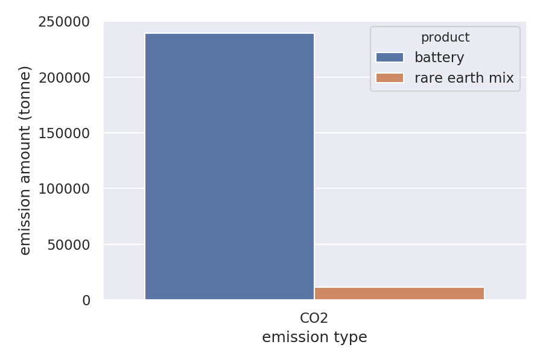

Simplified Solution Reports
In addition to the full output format described in data formats, RELOG can also generate a number of simplified reports in tabular data format (CSV), which can be more easily processed by spreadsheet software (such as Microsoft Excel), by data analysis libraries (such as Pandas) or by relational databases (such as SQLite).
In this page, we also illustrate what types of charts and visualizations can be produced from these tabular data files. The sample charts have been produced using Python, matplotlib, seaborn and geopandas.
Plants report
Report showing plant costs, capacities, energy expenditure and utilization factors. Generated by RELOG.write_plants_report(solution, filename).
| Column | Description |
|---|---|
plant type |
Plant type. |
location name |
Location name. |
year |
What year this row corresponds to. This reports includes one row for each year. |
latitude (deg) |
Latitude of the plant. |
longitude (deg) |
Longitude of the plant. |
capacity (tonne) |
Capacity of the plant at this point in time. |
amount received (tonne) |
Amount of input material received by the plant this year. |
amount processed (tonne) |
Amount of input material processed by the plant this year. |
amount in storage (tonne) |
Amount of input material in storage at the end of the year. |
utilization factor (%) |
Amount processed by the plant this year divided by current plant capacity. |
energy (GJ) |
Amount of energy expended by the plant this year. |
opening cost ($) |
Amount spent opening the plant. This value is only positive if the plant became operational this year. |
expansion cost ($) |
Amount spent this year expanding the plant capacity. |
fixed operating cost ($) |
Amount spent for keeping the plant operational this year. |
variable operating cost ($) |
Amount spent this year to process the input material. |
storage cost ($) |
Amount spent this year on storage. |
total cost ($) |
Sum of all previous plant costs. |
Sample charts
- Bar plot with total plant costs per year, grouped by plant type (in Python):
import pandas as pd
import seaborn as sns; sns.set()
data = pd.read_csv("plants_report.csv")
sns.barplot(x="year",
y="total cost ($)",
hue="plant type",
data=data.groupby(["plant type", "year"])
.sum()
.reset_index());

- Map showing plant locations (in Python):
import pandas as pd
import geopandas as gp
# Plot base map
world = gp.read_file(gp.datasets.get_path('naturalearth_lowres'))
ax = world.plot(color='white', edgecolor='50', figsize=(13,6))
ax.set_ylim([23, 50])
ax.set_xlim([-128, -65])
# Plot plant locations
data = pd.read_csv("nimh_plants.csv")
points = gp.points_from_xy(data["longitude (deg)"],
data["latitude (deg)"])
gp.GeoDataFrame(data, geometry=points).plot(ax=ax);

Plant outputs report
Report showing amount of products produced, sent and disposed of by each plant, as well as disposal costs. Generated by RELOG.write_plant_outputs_report(solution, filename).
| Column | Description |
|---|---|
plant type |
Plant type. |
location name |
Location name. |
year |
What year this row corresponds to. This reports includes one row for each year. |
product name |
Product being produced. |
amount produced (tonne) |
Amount of product produced this year. |
amount sent (tonne) |
Amount of product produced by this plant and sent to another plant for further processing this year. |
amount disposed (tonne) |
Amount produced produced by this plant and immediately disposed of locally this year. |
disposal cost ($) |
Disposal cost for this year. |
Sample charts
- Bar plot showing total amount produced for each product, grouped by year (in Python):
import pandas as pd
import seaborn as sns; sns.set()
data = pd.read_csv("plant_outputs_report.csv")
sns.barplot(x="amount produced (tonne)",
y="product name",
hue="year",
data=data.groupby(["product name", "year"])
.sum()
.reset_index());

Plant emissions report
Report showing amount of emissions produced by each plant. Generated by RELOG.write_plant_emissions_report(solution, filename).
| Column | Description |
|---|---|
plant type |
Plant type. |
location name |
Location name. |
year |
Year. |
emission type |
Type of emission. |
amount (tonne) |
Amount of emission produced by the plant this year. |
Sample charts
- Bar plot showing total emission by plant type, grouped type of emissions (in Python):
import pandas as pd
import seaborn as sns; sns.set()
data = pd.read_csv("plant_emissions_report.csv")
sns.barplot(x="plant type",
y="emission amount (tonne)",
hue="emission type",
data=data.groupby(["plant type", "emission type"])
.sum()
.reset_index());
Products report
Report showing primary product amounts, locations and marginal costs. Generated by RELOG.write_products_report(solution, filename).
| Column | Description |
|---|---|
product name |
Product name. |
location name |
Name of the collection center. |
latitude (deg) |
Latitude of the collection center. |
longitude (deg) |
Longitude of the collection center. |
year |
What year this row corresponds to. This reports includes one row for each year. |
amount (tonne) |
Amount of product available at this collection center. |
marginal cost ($/tonne) |
Cost to process one additional tonne of this product coming from this collection center. |
Transportation report
Report showing amount of product sent from initial locations to plants, and from one plant to another. Includes the distance between each pair of locations, amount-distance shipped, transportation costs and energy expenditure. Generated by RELOG.write_transportation_report(solution, filename).
| Column | Description |
|---|---|
source type |
If product is being shipped from an initial location, equals Origin. If product is being shipped from a plant, equals plant type. |
source location name |
Name of the location where the product is being shipped from. |
source latitude (deg) |
Latitude of the source location. |
source longitude (deg) |
Longitude of the source location. |
destination type |
Type of plant the product is being shipped to. |
destination location name |
Name of the location where the product is being shipped to. |
destination latitude (deg) |
Latitude of the destination location. |
destination longitude (deg) |
Longitude of the destination location. |
product |
Product being shipped. |
year |
Year. |
distance (km) |
Distance between source and destination. |
amount (tonne) |
Total amount of product being shipped between the two locations this year. |
amount-distance (tonne-km) |
Total amount being shipped this year times distance. |
transportation cost ($) |
Cost to transport this amount of product between the two locations for this year. |
transportation energy (GJ) |
Energy expended transporting this amount of product between the two locations. |
Sample charts
- Bar plot showing total amount-distance for each product type, grouped by year (in Python):
import pandas as pd
import seaborn as sns; sns.set()
data = pd.read_csv("transportation_report.csv")
sns.barplot(x="product",
y="amount-distance (tonne-km)",
hue="year",
data=data.groupby(["product", "year"])
.sum()
.reset_index());
- Map of transportation lines (in Python):
import pandas as pd
import geopandas as gp
from shapely.geometry import Point, LineString
import matplotlib.pyplot as plt
from matplotlib import collections
# Plot base map
world = gp.read_file(gp.datasets.get_path('naturalearth_lowres'))
ax = world.plot(color='white', edgecolor='50', figsize=(14,7))
ax.set_ylim([23, 50])
ax.set_xlim([-128, -65])
# Draw transportation lines
data = pd.read_csv("transportation_report.csv")
lines = [[(row["source longitude (deg)"], row["source latitude (deg)"]),
(row["destination longitude (deg)"], row["destination latitude (deg)"])
] for (index, row) in data.iterrows()]
ax.add_collection(collections.LineCollection(lines,
linewidths=0.25,
zorder=1,
alpha=0.5,
color="50"))
# Draw source points
points = gp.points_from_xy(data["source longitude (deg)"],
data["source latitude (deg)"])
gp.GeoDataFrame(data, geometry=points).plot(ax=ax,
color="0.5",
markersize=1);
# Draw destination points
points = gp.points_from_xy(data["destination longitude (deg)"],
data["destination latitude (deg)"])
gp.GeoDataFrame(data, geometry=points).plot(ax=ax,
color="red",
markersize=50);

Transportation emissions report
Report showing emissions for each trip between initial locations and plants, and between pairs of plants. Generated by RELOG.write_transportation_emissions_report(solution, filename).
| Column | Description |
|---|---|
source type |
If product is being shipped from an initial location, equals Origin. If product is being shipped from a plant, equals plant type. |
source location name |
Name of the location where the product is being shipped from. |
source latitude (deg) |
Latitude of the source location. |
source longitude (deg) |
Longitude of the source location. |
destination type |
Type of plant the product is being shipped to. |
destination location name |
Name of the location where the product is being shipped to. |
destination latitude (deg) |
Latitude of the destination location. |
destination longitude (deg) |
Longitude of the destination location. |
product |
Product being shipped. |
year |
Year. |
distance (km) |
Distance between source and destination. |
shipped amount (tonne) |
Total amount of product being shipped between the two locations this year. |
shipped amount-distance (tonne-km) |
Total amount being shipped this year times distance. |
emission type |
Type of emission. |
emission amount (tonne) |
Amount of emission produced by transportation segment this year. |
Sample charts
- Bar plot showing total emission amount by emission type, grouped by type of product being transported (in Python):
import pandas as pd
import seaborn as sns; sns.set()
data = pd.read_csv("transportation_emissions_report.csv")
sns.barplot(x="emission type",
y="emission amount (tonne)",
hue="product",
data=data.groupby(["product", "emission type"])
.sum()
.reset_index());
